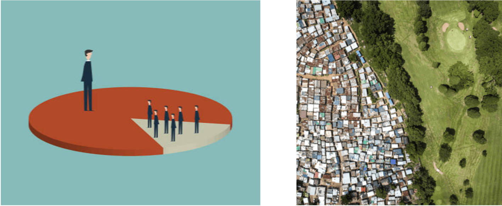
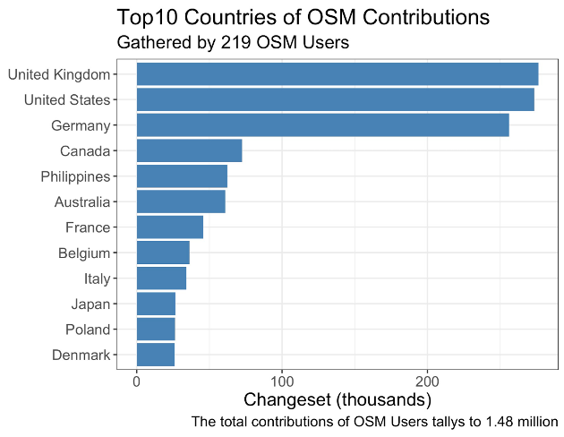

Geographic Biases in OSM Contributions
How do the Geographic Extent of Contributions Differ by Demographic groups?
Hyesop Shin, Ana Basiri
April 6th 2022
Under-representation and Spatial Bias
Crowdsourced Data: Patchy Distribution Across Space & Time
A well-known feature of the data from citizen science projects is the patchy distribution of maps across space and time
This leaves global citizen science datasets with spatial and temporal gaps and redundancies
Understanding the crowd’s temporal patterns and their spatial preferences is imperative
Contributors’ daily volunteering routines and preferences can reveal habits and interests
Can assist app designers and software engineers to create more inclusive crowdsourcing platforms

Our focus: is the volunteers
Current literature of citizen science looking at spatial and temporal biases: Ecological Fallacy
Do not breakdown the records by demographic groups even though certain cohorts have different distributions than their counterparts. These studies only imply gender or age biases as a whole.
Focus either on demographic characteristics or spatial and temporal patterns - the two perspectives are usually not put into relation with each other
Strava is attempting to consider gender, age
Still at very young stage
Study Objective
How do the Geographic Extent of Contributions (Spatial Bias) Differ by Demographic groups?
↙↘
OSM Data Exploration by gender and age
Spatial Diversity of OSM contributions by gender and age
Simpson’s Index of Diversity: The Metrics
\[D' = 1 - (\sum n(n-1)/N(N-1))\]
Probability that any two randomly selected countries from the sample will be different
0: Low diversity (tends to be domestic)
1: High diversity
N : Total number of contributions (by user)n : Number of contributions at particular country (by user)Defined at individual level and then aggregated by gender and age
We first defined at individual level and then aggregated by averaging over users with same gender and age cohort
Simpson’s Index of Diversity: Quick Example
\(D' = 1 - (\sum n(n-1)/N(N-1))\) \(D' = 1 - (\frac{36(36-1)+2(2-1)+1(1-1)} {39(39-1)})\) \(D' = 1 - (\frac{1282}{1482})\) \(1 - 0.85\) \(0.15\)
15% chance of randomly picking 2 that are different
Simpson’s Index of Diversity: Quick Example
\(D' = 1 - (\sum n(n-1)/N(N-1))\) \(D' = 1 - (\frac{6(6-1)+6(6-1)+6(6-1)} {18(18-1)})\) \(D' = 1 - (\frac{90}{306})\) \(1 - 0.29\) \(0.71\)
71% chance of randomly picking 2 that are different
Results
Exploratory Findings
Simpson’s Diversity Index
Top three countries accounted for 60% of the total contribution

Contributed Countries by Users’ Demography
Long-tail distribution: Men and women in 20s
Women > 30s: Fewer than 100 contributed countries
Oversampling? : OSM, in general, might have a similar distribution
Spatial Diversity: Gender
SID: Female: 0.50 Male: 0.67
Male participants were likely contribute to more countries than their female counterparts.
However, two peaks of diversity patterns of the female users mean that the spatial preference within the group contrasts significantly
Spatial Diversity: Gender & Age
Male participants have systematically scored higher diversity measures across both age groups
The scores of female participants are constantly lower than that of males, and it varies significantly by age groups
Female 40-50s’ have wider variation due to small number of participants
Conclusion
No.of Contributed Countries: Women were remarkably lower than that of men
However, such variabilities was identified by the disaggregation of gender and age
Men between 20s-50s & Women in 20s
Men in 20s’ to over 50s’ groups and women in the 20s’ group had polarised contributions where the averages were at 40-50 countries but have extreme users who contribute to over 150 countries.
Men were more likely to be spatial diverse than their female counterparts.
However, this once again varied significantly by the age groups.
20s:
0.7
0.42
30s:
0.69
0.63
40s:
0.66
0.51
50s:
0.64
0.44
Unequal samples: Men (188 persons) vs Women (30 persons) ⇐ might represent the online population?
Loosely categorised of unstructured sampling: a few extreme users can change the entire statistics “long-tail”
Ways to minimise the uneven spatial coverage:
the use of sophisticated methods
filtering
inter-observer skills
Thank You
Q & A
Hyesop Shin (2022) Geographic Biases in OSM Contributions: How do the Geographic Extent of Contributions Differ among Demographic groups? [CodeOcean]. https://doi.org/10.24433/CO.2886888.v1